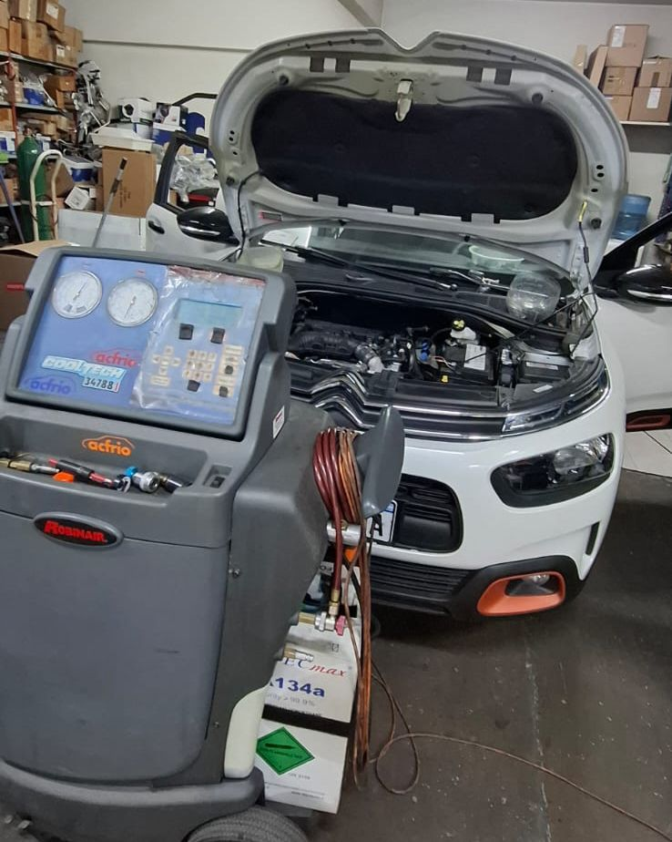
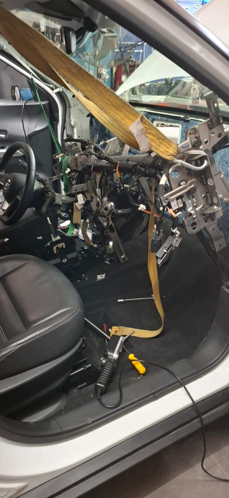
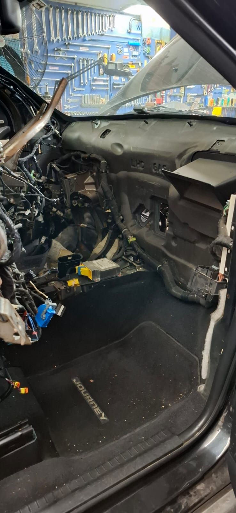
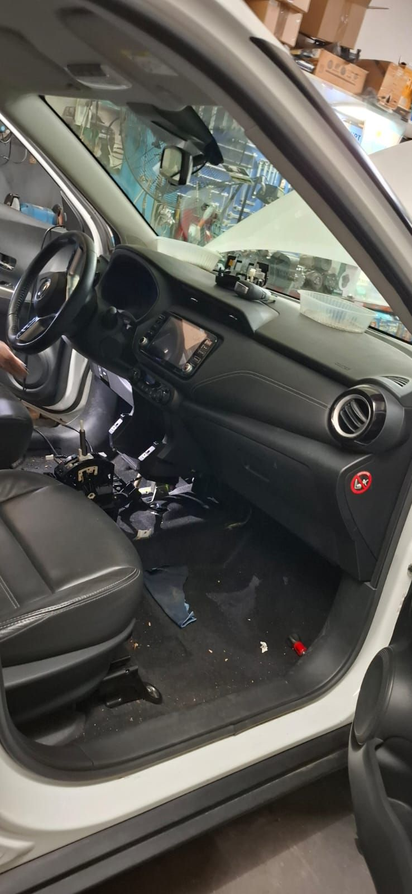
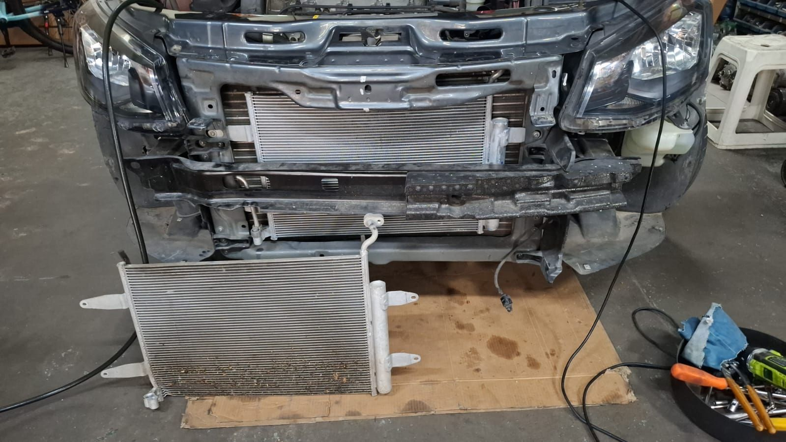
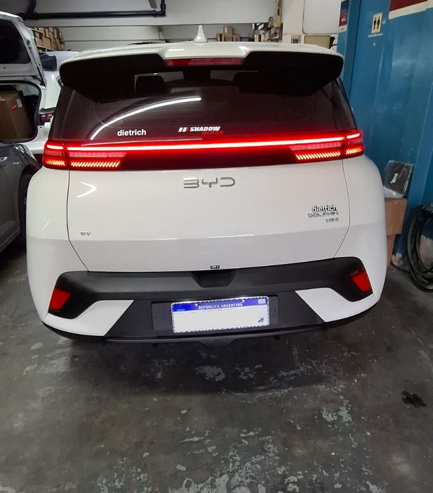
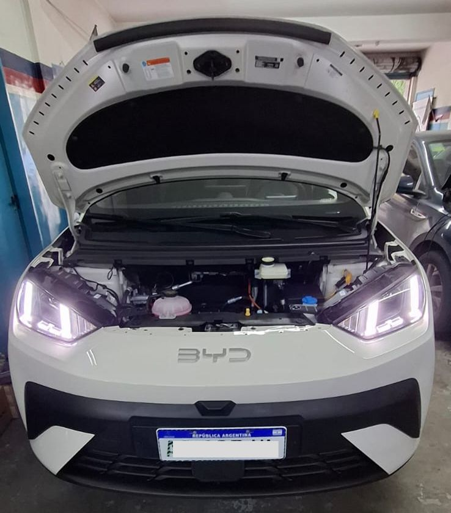
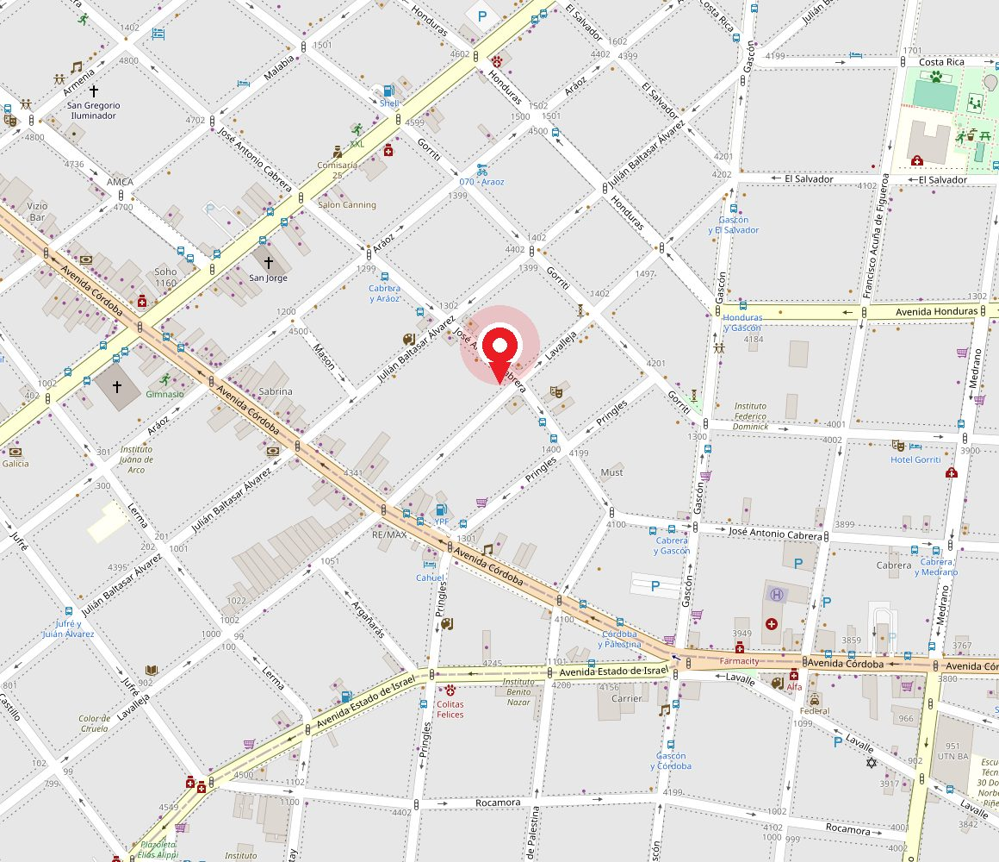

01
Carga de gas refrigerante
Recuperamos el gas, hacemos vacío y cargamos la cantidad exacta que pide el fabricante. Si el sistema perdió gas, primero buscamos por dónde: cargar sin reparar es tirar el gas a la calle.
Taller especializado · Palermo, CABA
En acfrio hacemos una sola cosa y la hacemos bien: la climatización de tu vehículo. Revisamos el sistema completo, te contamos qué encontramos y recién ahí avanzamos.
Respondemos por WhatsApp
Frío · A/A Calefacción · Calor
01 Servicios
El aire de un auto no es una sola pieza: es un circuito de presión, un compresor, un intercambio de calor y una parte eléctrica que tienen que trabajar juntos. Trabajamos sobre todos esos frentes.
01
Recuperamos el gas, hacemos vacío y cargamos la cantidad exacta que pide el fabricante. Si el sistema perdió gas, primero buscamos por dónde: cargar sin reparar es tirar el gas a la calle.
02
Presurizamos el circuito y revisamos mangueras, o'rings, condensador, evaporador y sellos del compresor hasta encontrar la pérdida real.
03
Reparación o reemplazo del compresor, polea, bobina del embrague electromagnético y correa. Incluye el cambio del filtro deshidratador, que es obligatorio cada vez que se abre el circuito.
04
Radiador de calefacción, válvula de agua, mando de temperatura y compuertas. Si el habitáculo no calienta o el parabrisas no se desempaña, el problema está acá.
05
Electroventiladores, resistencias, presostatos, sensores y turbina del habitáculo. Muchos "el aire no arranca" son eléctricos, no de gas.
06
Limpieza y desinfección del evaporador y los conductos, más cambio del filtro de habitáculo. Es lo que saca el olor a humedad cuando prendés el aire.
02 Diagnóstico
Casi todas las fallas de climatización dan señales antes de dejarte a pie en enero. Si reconocés alguna de estas, conviene revisarlo.
La regla del gas: un sistema sano no consume refrigerante.
Si tenés que cargar gas cada temporada, no falta gas: hay una fuga en algún punto del circuito. Reparar la pérdida sale una sola vez; recargar sale todos los años.
Contanos el síntoma03 Cómo trabajamos
Trabajamos con turno para poder dedicarle al vehículo el tiempo que necesita el diagnóstico, en lugar de atenderlo a las corridas.
Nos escribís por WhatsApp con la marca, el modelo, el año y qué está pasando. Coordinamos día y horario.
Medimos presiones de alta y baja, temperatura de salida, estado del compresor y la parte eléctrica. Buscamos la causa, no el síntoma.
Te explicamos la falla, qué requiere para resolverse y qué se puede esperar. Nada se interviene sin que estés de acuerdo.
Hacemos el trabajo y volvemos a medir el rendimiento con el sistema andando, para verificar que quedó como tiene que quedar.
04 Trabajos
Fotos de trabajos que hacemos habitualmente. Sirven para entender qué implica cada reparación antes de dejar el vehículo.

Trabajo 01
Cargar no es "ponerle gas". El equipo primero recupera el refrigerante que queda adentro, después hace vacío para sacar el aire y la humedad del circuito, y recién ahí carga la cantidad exacta —medida por peso— que indica el fabricante para ese vehículo.
Ese paso del vacío es el que más se saltea y el que más caro sale: un circuito con humedad adentro se corroe y termina llevándose puesto el compresor.
Trabajamos con los dos gases: el de la enorme mayoría de los autos que circulan hoy (R134a) y el de los modelos más nuevos (R1234yf), que es distinto y necesita otro equipo. Si no sabés cuál lleva el tuyo, no importa: lo vemos nosotros.



Trabajo 02
El evaporador es la pieza que enfría el aire que entra al habitáculo, y no está en el motor: va montada adentro de la caja de climatización, detrás del tablero. Para cambiarlo hay que desarmar el tablero completo —cableado, airbags, columna de dirección— y volver a armarlo sin que quede un ruido ni un testigo prendido.
Es el trabajo más largo de la especialidad y el que más se nota cuando está mal hecho. Por eso, cuando el problema es una fuga en el evaporador, conviene resolverlo de una sola vez y bien.

Trabajo 03
El condensador va adelante de todo, detrás de la parrilla. Es el que se come las piedras, el barro y la sal de la calle. Cuando pierde por un golpe o se tapa de suciedad, el sistema deja de disipar calor y el aire enfría cada vez menos, sobre todo parado en el tránsito.
Para cambiarlo hay que desarmar el frente del vehículo, así que es un buen momento para revisar de paso el estado del resto del circuito.


Trabajo 04
En un auto eléctrico el aire acondicionado no cuelga del motor. El compresor es eléctrico, trabaja con alta tensión, y el mismo circuito suele encargarse además de mantener la batería en temperatura. La calefacción tampoco viene del agua del motor: la resuelve el propio sistema.
O sea: se diagnostica distinto y no se interviene con los criterios de un auto naftero. Estos vehículos ya entran al taller.
05 Alcance
Atendemos autos, camionetas, SUV y utilitarios de uso particular, comercial y de flota. Si tenés varias unidades, podemos organizar el mantenimiento preventivo de la climatización antes de la temporada de calor.
Estamos sobre Lavalleja, a metros de Avenida Córdoba y cerca de Scalabrini Ortiz y Estado de Israel, con acceso rápido desde casi cualquier punto de la Ciudad.
06 El taller
También atendemos llamadas al 11 4867-0237, y estamos en @acfrio.arg.
Atendemos con turno previo. Escribinos y coordinamos el día.

07 Preguntas frecuentes
En un sistema en buen estado, nunca. El refrigerante no se consume: circula en un circuito cerrado. Si al auto le falta gas, en algún punto se está escapando. Por eso, antes de cargar, buscamos la fuga: si no, en unos meses vas a estar en la misma situación.
Depende de lo que aparezca en el diagnóstico. Una higienización o una carga con control de fugas es bastante más rápida que el cambio de un evaporador, que requiere desarmar parte del tablero. Cuando vemos el vehículo te decimos con qué tiempo contar.
Sí, y por dos razones. Primero, porque el A/A deshumidifica: es la forma más rápida de desempañar los vidrios y ver bien. Y segundo, porque hacerlo andar unos minutos cada tanto mantiene lubricadas las juntas y los sellos del compresor, que se resecan cuando el sistema queda meses parado.
Un sistema que no se usa nunca es un sistema que empieza a perder gas.
Porque el evaporador trabaja mojado por condensación y, si no se limpia, se forman hongos y bacterias en las aletas y en los conductos. El aerosol perfumado tapa el olor unos días; la solución es higienizar el evaporador y cambiar el filtro de habitáculo.
Trabajamos con turno. Un diagnóstico de climatización lleva su tiempo y preferimos reservarlo antes que atender a las apuradas. Escribinos por WhatsApp contándonos marca, modelo, año y el síntoma, y coordinamos.
Sí. acfrio es un taller especializado: hacemos aire acondicionado y calefacción para el automotor, y nada más. Hace más de 20 años que trabajamos sobre este sistema, y esa es exactamente la ventaja de traerlo acá en lugar de a un taller general.
Contanos qué le pasa a tu auto y coordinamos el diagnóstico en el taller de Palermo.